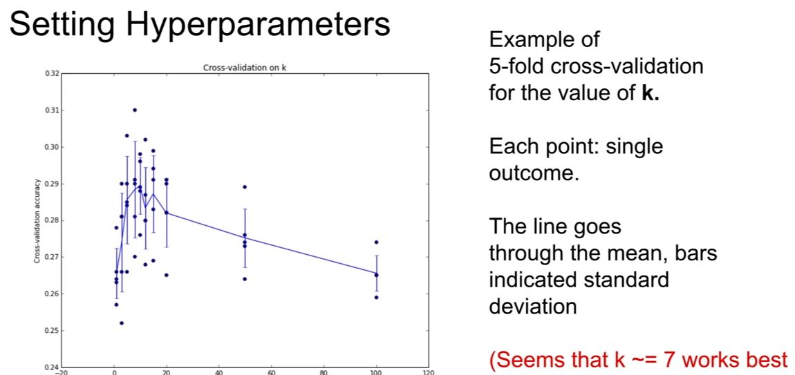
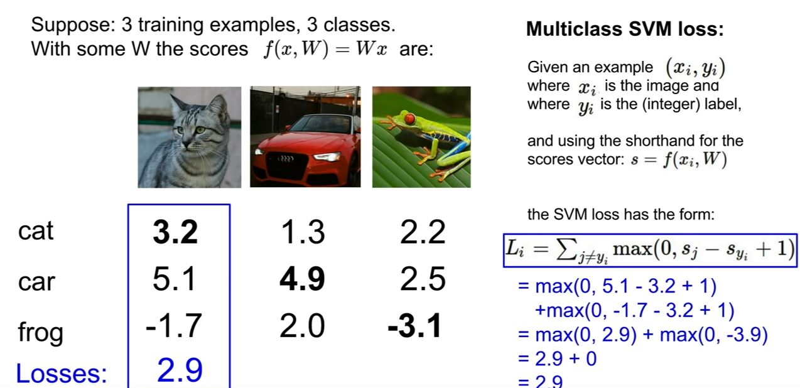
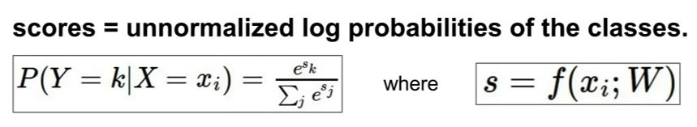
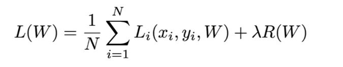
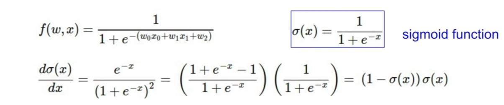

class NearestNeighborhood:
def __init__(self):
pass
def train(self, X, y):
self.Xtr = X
self.ytr = y
def predict(self, X):
""X: N x D, N 个example， 每个example是D维度""
num_test = X.shape[0]
Ypred = np.zeros(num_test, dtype = self.ytr.dtype)
for i in range(num_test):
distance = np.sum(np.abs(self.Xtr - X[i,:], axis = 1))
min_index = np.argmin(distance)
# find the most minimum distance; K = 1
Ypred[i] = self.ytr[min_index]
return Ypred


def Loss_vectorized(x,y,W):
delta = 1
score = W.dot(x)
margins = np.maximum(0, scores - scores[y] + delta)
scores[y] = 0
loss = np.sum(margins)
return loss

将所有score去一下exponential，然后再normalized，这个值就是概率了
f = np.array([123, 456, 789]) # example with 3 classes and each having large scores
p = np.exp(f) / np.sum(np.exp(f)) # Bad: Numeric problem, potential blowup
# instead: first shift the values of f so that the highest number is 0:
f -= np.max(f) # f becomes [-666, -333, 0]
p = np.exp(f) / np.sum(np.exp(f)) # safe to do, gives the correct answer

为了解决这个问题，we sample some small set of training examples, called a mini-batch. Use the small mini-batch to compute an estimate of the full sum and an estimate of the gradient
while True:
data_batch = sample_training_data(data, 256) # sample 256 examples
weights_grad = evaluate_gradient(loss_fun, data_batch, weights)
weights += - step_size * weights_grad # perform parameter update
In GD, you have to run through ALL the samples in your training set to do a single update for a parameter in a particular iteration, in SGD, on the other hand, you use ONLY ONE or SUBSET of training sample from your training set to do the update for a parameter in a particular iteration. If you use SUBSET, it is called Minibatch Stochastic gradient Descent.

当z = f(x,y)，且x和y都是vector的时候，求back-prop的时候，z相对于x的导数所得的矩阵就是Jacobian Matrix，就是derivative of each element of z wrt each element of x